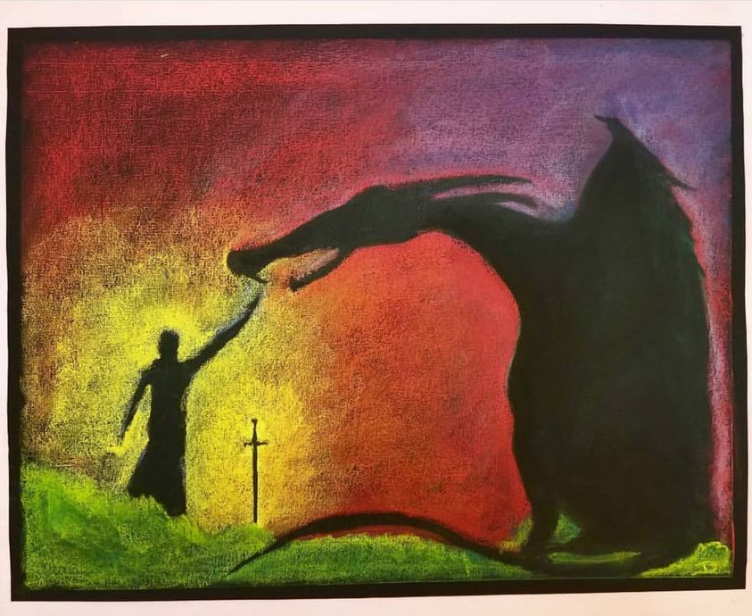

Timeline photos
September 29 is the day some people in the West celebrate Michaelmas. Basically, because it is near the autumnal equinox, the celebration is about being brave as darkness begins to envelope us.
In Waldorf schools they often celebrate this with a story of villagers channeling the bravery of Michaelmas to fight the dragon. At the end, they tame the dragon and enslave him to turn the wheel to grind their grain.
This dragon imagery is being discussed in some schools because Asian people don't see dragons as bad. Dragons are a positive force.
I would like to add a perspective to me and my fellow dragons. My power is most often created through anger and rage (which is just sadness in another form). I resent the idea that we dragons must be chained to grind wheat. Is that all you can imagine we are good for? Is that all you can envision for me?
That's what the city of Akron imagines for me. To sue me and penalize me into oblivion. All they want is for me to just stop. "Stop being a dragon. We don't need your kind around here."
Dragons fight injustice is powerful ways. Sure. Dragons sometimes are arbitrary and random in their rage. But with a little channeling, they are a wonderful power to have on your team. The Avengers figured that out with The Hulk.
Please learn to love your dragons and let them be dragons. We are wonderfully useful. Chaining us is just a waste of endless power and strength.